Sublime Text 4 Users’ Guide
@author Tansan Man(tansan5150)@up to date 2023.01.03

본 웹사이트는 크리에이티브 커먼즈 저작자표시 2.0 대한민국 라이선스에 따라 이용할 수 있습니다.
목차
1. 설치
2. 환경설정
3. 기본 사용법
4. 다중 선택, 세로 열 편집
5. 개발 관련 기능
6. SFTP 로 작업 하기
7. Plugin 관리
1. 설치
1.1 프로그램 설치
sublime_text_build_41ㅌXX_x64_setup.exe를 설치- 설치 시
Add to explorer context menu가 나오면 Check 해 준다(우측 클릭 문서열기 기능).
1.2 Plugin 설치
- Sublime Text 를 실행 후 바로 종료 한다. Plugin 디렉토리는 최초 실행 후 생성된다.
- 추가 플러그인 설치를 위해
Installed Packages.zip와Packages.zip파일을 압축 해제 한다.C:\Users\사번\AppData\Roaming\Sublime Text폴더에Installed Packages와Packages두 폴더를 삭제 한다.- 압축 해제한
Installed Packages와Packages폴더를 복사 한다.- 만약 위 폴더에
Sublime Text가 없는 경우C:\Users\master\AppData\Roaming\Sublime Text의 경로를 사용 한다.
1.3 License 등록
- Help > Enter License 메뉴를 실행 후 제공받은 License Key 내용을 모두 복사하여 붙여 넣는다.
- SFTP Plugin License 등록: Command Palette
CTRL+SHIFT+P> sfl 입력 >SFTP: Enter License Key선택 후 하단에 생긴 License Key 입력 항목에 제공된 키를 붙여 넣는다.
2. 환경 설정
2.1 Command Palette 에서 설치된 패키지 확인
Sublime Text의 메뉴 기능 또는 설치된 플러그인 패키지의 관리, 플러그인 기능 사용 등 많은 것을 Commnad Palette 에서 할 수 있다. 예를 들면 SVN, GIT 으로 Checkout, Commit 또는 Clone 등을 할 때 Command Palette에서 한다.
CTRL+SHIFT+P: Command Palette 띄우기
다음 예제를 통해 1번에서 복사하여 설치 한 플러그인 목록을 살펴보자.
- Command Palette 에서 다음을 입력한다
pclp- Package Control: List Packages 와 같이 입력 할 수 있으나 앞 글자만 입력 해도 자동완성 되는 편리한 특징이 있음
Package Control: List Packages가 보이면 선택, 설치된 패키지 목록이 보인다.
이 중 Package Control 은 제작사에서 제공하는 Plugin 이며, 일반적으로 Sublime Text 를 설치 후 가장 먼저 설치해야 하는 필수 플러그인 이다. Package Control을 통해 외부 Plugin을 설치하고 관리 할 수 있다. 우리가 사용하는 업무망, 관리망은 인터넷이 되지 않는 환경 이므로 패키지를 인터넷 PC에서 옮겨서(복사) 설치 해야 한다. 1.2 Plugin 설치 항목을 수행 했으면 이미 설치되어 있다.
2.2 EUC-KR 한글 Encoding 관련 사항
Sublime Text는 EUC-KR Locale을 기본적으로 지원 하지 않는다. 따라서 이를 위해 ConvertToUTF8 플러그인의 설치가 필요하다. 2.1의 List Packages로 확인 해 보면 우리가 복사한 플러그인 모음에 이미 들어가 있다.
- EUC-KR 설정: File > Set File Encoding To > Korean (EUC-KR)
- EUC-KR로 다시 읽기: File > Reload with Encoding > Korean (EUC-KR)
Sublime Text는 File 메뉴의 Reopen with Encoding 과 Save with Encoding을 통해 Locale 변환 기능을 제공한다. EUC-KR의 경우 기본 제공 기능이 아니므로 Plugin 설치 후 별도의 메뉴가 생긴다.
2.3 폰트 설치 (Optional)
필요한 경우 설치본 디렉토리 내 fonts 폴더에 있는 폰트 중 원하는 폰트를 설치한다. Coding 관련 인기 인는 폰트들임.
- 나눔고딕 : 가변폭
- 나눔고딕코딩 : 고정폭
- D2 Coding: 고정폭
2.4 Theme 및 Color Scheme
기본 적으로 Preferences 메뉴를 통해 할 수도 있지만 Command Palette 를 사용하면 편리하다.
-
Editor 창 Text 색깔 표현 -
Monokai색상이 Default 이며 Sublime Text의 상징과도 같은 Color Scheme.Mariana색상은 부드럽고 미려한 색상으로 인기가 많은 Color Scheme.CTRL+SHIFT+P>usc입력 >UI:Select Color Scheme선택 -
프로그램의 Color Theme 선택 - 시력 보호를 위한 다크모드 등을 선택 할 수 있다.
CTRL+SHIFT+P>ust정도 입력 >UI: Select Theme선택
2.5 환경 설정
Sublime Text의 전반적인 설정을 관리한다.
메뉴에서 Preferences > Settings
또는 Command PaletteCTRL+SHFT+P>ps입력 >Preferences: Settings선택
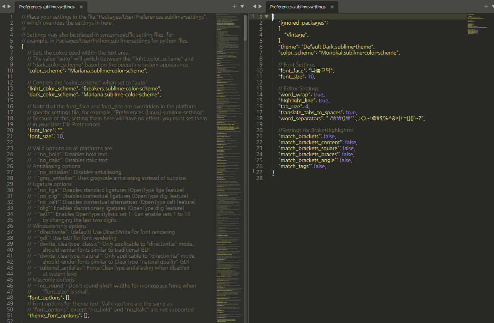
처음에는 이러한 방식이 낯설 수도 있는데 익숙해 지면 매우 편리하다. 왼쪽에 열리는 창은 수정 불 가능한 Default 설정 이고 이 설정을 참고 하여 원하는 설정을 오른쪽 창에 json 형식으로 Overriding 하듯 복붙하고 수정해 주면 된다. 오른쪽 창의 항목을 빼면 즉시 원래 설정으로 되돌릴 수 있다.
아래의 //Font Settings 이하 부분을 복사하여 붙여넣고 필요 항목 수정 후 저장하면 즉시 저장 된다. 환경설정 파일 수정이 끝나면 CTRL+W 로 창을 닫으면 된다.
{
"ignored_packages":
[
"Vintage",
],
"theme": "Default.sublime-theme",
"color_scheme": "Monokai.sublime-color-scheme",
//Font_Settings
"font_face": "나눔고딕",
"font_size": 11,
//Editor_Settings
"word_wrap": true,
"highlight_line": true,
"tab_size": 4,
"translate_tabs_to_spaces": true,
"word_separators": "./\\()\"':,.;<>~!@#$%^&*|+=[]{}`~?",
//Settings_for_BraketHighlighter
"match_brackets": false,
"match_brackets_content": false,
"match_brackets_square": false,
"match_brackets_braces": false,
"match_brackets_angle": false,
"match_tags": false,
"update_check": false,
}
- “ignored_packages” ~ “color_scheme” 은 자동 생성 항목 임.
- Font 를 바꾸지 않는 경우 해당 항목은 제외 한다. 제공된 폰트 사용시 폰트 명은 아래와 같은 이름으로 설정 할 수 있다.
- “font_face”:”나눔고딕코딩”,
- “font_face”:”D2Coding”,
- “word_separators” 의 항목은 더블클릭으로 단어를 선택 했을 때의 경계를 의미한다. 예를들어 . 을 빼면 파일명 선택 시 확장자를 포함 한 번에 선택이 가능하다.
- //Settings for BraketHighlighter 이하 항목은 Braket을 좀 더 잘 표시해 주는 Plugin인 BraketHighlighter의 설정이 기본 기능과 충돌이 나지 않게 하기 위한 설정이다. 그냥 그대로 넣어 주자.
2.6 환경 설정 - Chrome 실행 설정(html/Javascript)
html, javascript 등 웹 관련 작성 후 바로 확인 하기 위해 빌드 항목에 브라우저 항목을 추가 한다.
Chrome의 예 이며 Edge, IE 도 같은 방법으로 가능하다.
- Build System -> New Build System 선택
- 다음과 같이 입력
{
"cmd": ["C:\\Program Files (x86)\\Google\\Chrome\\Application\\chrome.exe","$file"]
}
- Chrome.sublime-build 로 저장
CTRL+B로 실행 (처음만Chrome입력)
3. 기본 사용법
3.1 파일/프로젝트 탐색 Side Bar
Side Bar에 작업 폴더를 등록하여 사용하면 편리하다. 최초 실행시 메뉴에서 한번 실행 해 줘야 한다
메뉴:
View>Side Bar>Show Side Bar
Side Bar: 보이기/숨기기: 이후CTRL+K,CTRL+B(CTRL을 누른채로K,B연속 입력) 사용 가능
관리하고자 하는 폴더를 Drag 하여 Side Bar에 Drop 시킨다.
참고: 예를 들면
workdir이란 폴더를 만들고 Side Bar에 등록 한다.
이후 그 밑에 프로젝트 또는 업무별로 폴더를 추가 한다.
탐색기 또는 Sidebar 어디에서나 만들 수 있다.
이러한 모습이 되며, 최근 연 파일 및 작업 폴더 내 파일을 편리하게 탐색, 편집 할 수 있다. 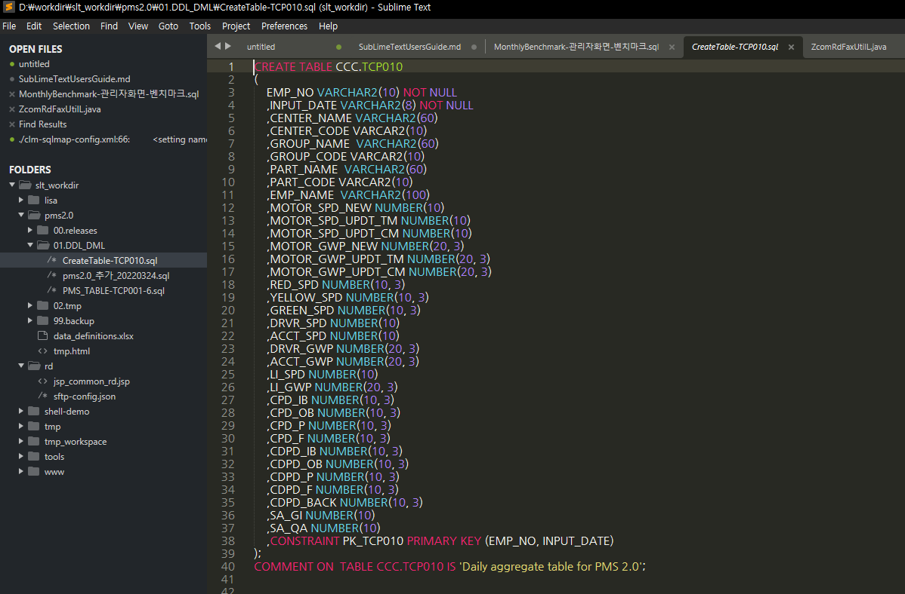
※ [TIP] 특이한 기능: Sublime Text에서는 .png 등의 이미지 파일을 직접 열어 볼 수 있다.
3.2 탭, 화면 조작
- 탭 이동
- 탭이동(Historical):
CTRL+TABCTRL을 누른채로TAB을 여러번 치면 바로직전, 전전, 전전전 탭으로 얼여본 순서에 따라 이동- 키보드에서 손을 떼고 잠시 있은 후 다시
CTRL+TAB을 누르면 현재 Tab을 기준으로 전, 전전 순서로 동작
- 탭이동(Linear):
CTRL+PGUP/PGDOWN - 탭이동(번호순):
ALT+숫자(왼쪽탭부터 순서대로)
- 탭이동(Historical):
- 창 분할
- 창분할:
CTRL+탭클릭(선택 한 탭 수 만큼 분할) - 창분할 해제:
CTRL+탭클릭(이미 분할된 탭중 하나를 클릭) - 창분할(또 다른 방법):
ALT+SHIFT+2(분할할 창 수) > 원하는 탭을 오른쪽 빈분할 창으로 드래그 - 창분할(또 다른 방법) 원복:
ALT+SHIFT+1
- 창분할:
- 화면 확대/축소
- 전체 화면 :
F11 - 집중모드:
SHIFT+F11 - 화면 확대/축소:
CTRL+-/+또는CTRL+마우스휠
- 전체 화면 :
3.3 Editing 기본
매우 자주 사용 하게 될 기능 으므로 확실하게 익혀두길 권장 합니다.
- Line 선택/이동
- 한 줄 선택 :
CTRL+L(계속 입력 시 다음 줄 선택) - 라인 위/아래로 이동 - 한 줄 or 블럭 :
CTRL+SHIFT+UP/DOWN
- 한 줄 선택 :
- Line 추가/삭제/합치기
- 아래로 한 라인 추가 :
CTRL+ENTER(행 내 아무 곳에서나 사용 가능 하여 편리) - 위로 한 라인 추가 :
CTRL+SHIFT+ENTER - 현재 라인 삭제 :
CTRL+SHIFT+K - 현재 라인 바로 아래 복사 :
CTRL+SHIFT+D - 한 줄로 합치기 :
CTRL+SHIFT+J(바로 아랫줄과 합쳐짐)
- 아래로 한 라인 추가 :
- 들여쓰기, 내어쓰기
- 행 들여쓰기: 블럭 선택 후
TAB, 내어쓰기: 블럭 선택 후SHIFT+TAB - 코드 들여쓰기/내어쓰기:
CTRL+L등으로 줄 선택 후TAB/ 줄 선택 후SHIFT+TAB
- 행 들여쓰기: 블럭 선택 후
- 기타
- 대소문자 변환 : 블럭 선택 후
CTRL+K->U또는L(CTRL을 누른채로K,U연속 입력) - Bracket, Brace 범위 안 선택:
CTRL+SHIFT+M
- 대소문자 변환 : 블럭 선택 후
-
실습 예제1: 한번에 5줄 복사하기
CTRL+L을 5번눌러 5줄 선택CTRL+SHIFT+D로 바로 아래 복사CTRL+SHIFT+UP/DOWN으로 적정 위치 이동
-
실습 예제2: 들여쓰기, 내어쓰기
CTRL+L을 여러번 눌러 여러 줄 선택TAB과SHIFT+TAB을 여러번 눌러 들여쓰기 내어쓰기 조정CTRL+K->U로 대문자로 모두 변환CTRL+SHIFT+K로 삭제
3.4. 검색 기능
UltraEdit 와 같은 구식 Editor 와 많은 차이가 나는 부분 중 하나가 편리한 검색 기능이다. 단축키 몇 개로 빠르고 편리한 찾기와 검색을 해 보자.
3.4.1 기본 검색 기능
- 찾기:
CTRL+F(범위 검색, 대소문자 구분, 정규식 사용 등 가능) - 바꾸기:
CTRL+H
3.4.2 Go Anything(어디로든 이동): CTRL+P
- 왼쪽 Side Bar에 등록 된 모든 폴더 내 특정 문서 나 소스를 열고 싶을 때 여기에 생각나는 대로 단어를 치면 된다.
-
예: ZcomStringUtilL.java 를 열어보고 싶을 때, 하지만 어디 있는지 찾기도 귀찮고 이름도 정확히 모르겠을 때,
CTRL+P를 누르고str정도 대충 입력하면 아주 쉽게 찾을 수 있다.- 단어가 매칭되어 나오는 항목을 위,아래로 선택하면 화면에 실제 파일이 내용이 보여진다. 빠르게 훑어 볼 때 매우 유용.
- [Tip] 특정 확장자를 찾고 싶을 때
.jsp와 같은 방식으로 사용하면 유용하다. 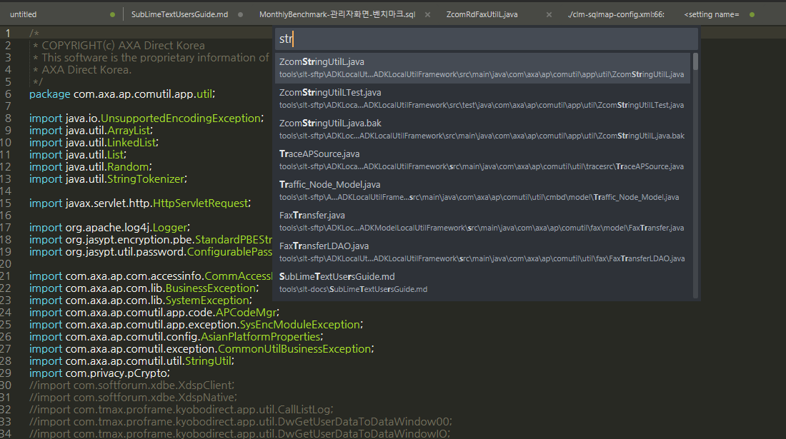
-
@단어로 Method, Function 또는 멤버 변수 찾기- Javascript, jsp 또는 java 파일을 열었을 때 method 나 function 으로 이동 할 때 매우 유용.
- 소스코드를 하나 열고,
@단어형식으로 단어에 이동하고자 하는 method나 function 명을 생각나는 대로 대충 쳐보자. - 위, 아래로 커서를 움직일 때 마다 해당 function 으로 빠르게 이동 한다.
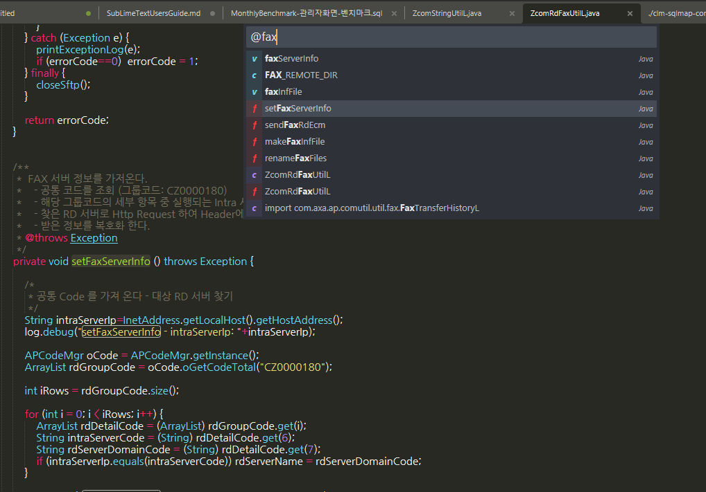
-
#단어로 문서 내 특정 단어 찾기- 문서 내 특정 단어를 찾아 빠르게 이동 할 수 있다.
- 예:
#바나나
-
:숫자로 문서 내 Line 으로 이동 하기- 문서 내 특정 Line 으로 빠르게 이동 할 수 있다.
- 예:
:124
3.4.3 디렉토리 안 모든 파일에서 단어 찾기: CTRL+SHIFT+F
-
Unix/Linux의 find | grep 조합과 같은 기능이다. 특정 폴더를 지정하면 안에 있는 모든 파일에 대해 단어 검색을 할 수 있다.
Where항목에 직접 적거나 우측...버튼을 클릭 >Add Folder하여 검색 시작 폴더를 지정 한다.Find항목에 찾고자 하는 단어를 입력 한다.
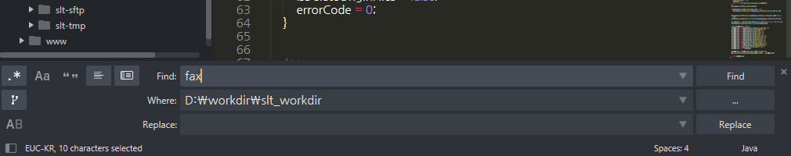
- 검색 결과가 Find Results 탭에서 상세하게 나온다. 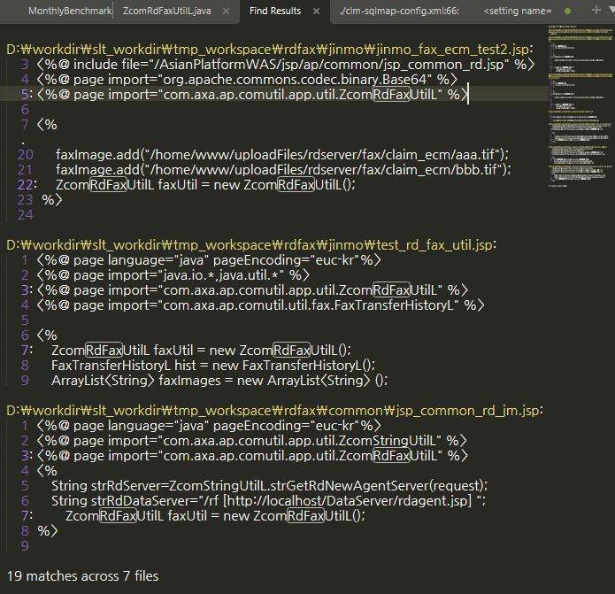
-
특정 확장자 파일만 검색을 하는 경우
...버튼 클릭 >Add Folder>Add Include Filter> 원하는 확장자로 변경Find항목에 정규식(Regex)을 사용 할 수 있다. 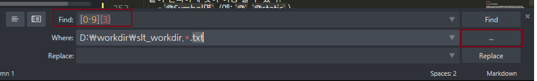
3.4.4 Command Palette: CTRL+SHIFT+P
- Sublime Text 의 메뉴 또는 제공하는 기능 및 명령어를 실행 한다.
4. 다중 선택, 세로 열 편집
4.1 다중 선택
다중 선택은 여러분의 단순 반복 작업 시간을 줄여 준다. 반복되는 같은 단어나 문장을 하나 하나 고치는 노가다는 개발자에게 죄악과도 같은 것 이다.
- 단어 다중 선택:
CTRL+D- 현재 커서 위치 또는 더블클릭 또는 단어 범위를 직접 선택 후
CTRL+D CTRL+D반복 입력 하여 필요 한 만큼 선택 한다.
- 현재 커서 위치 또는 더블클릭 또는 단어 범위를 직접 선택 후
CTRL+D단어 선택 해제:CTRL+U- 선택한 단어를 역순으로 하나씩 빼면서 선택 해제 한다.
CTRL+D연속선택 시 선택 제외:CTRL+DK(DK 연속 입력)- 다중선택(마우스):
CTRL+SHIFT+우측클릭, 임의 위치 다중 선택 시 유용 - 다중선택(마우스) 빼기:
ALT+SHIFT+우측클릭 - 특정 단어 전체 선택:
ALT+F3 - 다중선택 전체 해제:
ESC - 다중선택 시 대소문자 구분:
CTRL+F>ALT+C그 다음CTRL+D를 연속해 선택 또는ALT+F3 -
실습 예제1: 모든 변수명 뒤에 111추가 하기
- java 소스코드를 하나 열어 자주 쓰이는 변수명 중 하나 에 커서를 위치 시킨다.
ALT+F3을 눌러 전체 선택- 우측 커서를 한번눌러 단어 마지막에 위치 후 111을 입력
-
실습 예제2: 모든 변수명 중 몇 개 빼고 변경 하기
- 자주 쓰이는 변수명 중 하나 에 커서를 위치 시킨다.
CTRL+D를 눌러 단어를 선택 한다.CTRL+DK를 눌러 그 다음 단어는 빼고 선택 한다.- 2~3 을 적절히 반복하여 부분적으로 단어 선택을 한다.
- 선택된 단어를 변경 한다.
4.2 열(세로) 편집
문단의 시작 뿐만아니라 끝 부분만 커서를 위치 시켜 동시 편집이 매우 편리하다. 뿐만 아니라 어느정도 규칙성만 있다면 중간 부분의 서로 길이가 다른 열 편집도 가능 하다.
- 세로열 선택(키보드):
CTRL+ALT+UP/DOWN - 세로열 선택(마우스):
SHIFT+우클릭 드래그 - 세로줄 또는 문장 마지막 편집:
CTRL+SHIFT+L -
실습 예제: 10 줄 선택 후 문장 마지막에 단어 추가 하기
- java 소스 또는 각 행의 끝 부분 길이가 다른 파일 하나를 연다
CTRL+L을 10번 눌러 10줄 선택CTRL+SHIFT+L를 누른 후 우측 커서를 누른다(반대로 최측을 누르면 문장 처음 선택).- 문장 끝에 단어를 추가 한다.
-
참고: Code 들여쓰기를 위해 열 편집을 사용 할 수도 있지만 이 보다는 문장 선택 후
TAB과SHIFT+TAB을 이용 하는 편이 더 쉽다.
5. 개발 관련 기능
5.1 Coding 관련 기능
5.1.1 자주 쓰는 기능
- 자동완성:
CTRL+SPACE(자동완성 선택은TAB키 사용) - 블럭 주석/취소 :
CTRL+SHIFT+/ - 한줄 주석/취소 :
CTRL+/ - 코드 펴기/접기 :
CTRL+SHIFT+[,CTRL+SHIFT+] - 콘솔(하단) 열기 닫기:
CTRL+ `
5.1.2 부가 기능
- md문서 미리보기:
CTRL+B - Hex Editor:
CTRL+SHIFT+H- Edit를 위해서는 Package Control 이용
- Byte 변경: HexViewer:
Show Hex Edit Panel(hve) - 변경내용 저장:
HexViewer: Export Bin(hvb)
- node.js 실행:
ALT+R
5.1.3 열 Sorting 하기
- 오름차순 정렬(대소문자 구분 X):
F9(또는Command Palette>Sort Lines) - 오름차순 정렬(대소문자 구분 O):
CTRL+F9(또는Command Palette>Sort Lines(Case Sensitive)) - 내림차순 정렬:
Command Palette>Permute Lines: Reverse - 랜덤 정렬:
Command Palette>Permute Lines: Shuffle - 중복 값 제거:
Command Palette>Permute Lines: Unique
- 실습 예제: Snippets(자동완성)을 이용한 html 작성
CTRL+N으로 빈 문서를 하나 만든 후 적절한 곳에 demo1.html 이란 이름으로 저장 한다.- 문서 상단에 html 입력 후
ENTER대신TAB키를 입력- title 이 있는 줄에서
CTRL+ENTER로 줄 바꾸기- script 입력 후
TAB- body 또는 script를 적당히 채워 넣은 후 저장(할 거 없음 고민하지 말고 Hello World)
CTRL+B를 눌러 브라우저에서 확인
5.2 파일 비교 - diff 기능
-
Editor 기본 제공 기능 - Unix 스타일 Diff 제공
우측 Side Bar 에서 비교 할 파일 2개를
SHIFT+좌측클릭선택 후 마우스 우측 클릭 하여Diff Files를 선택 -
Plugin 을 사용한 Diff 기능
- 비교할 두 문서가 탭에 열려 있어야 함
- 현재 선택된(열려진) 탭과 다른 탭을 비교하는 방식: 비교 할 대상의 탭 위에
우측클릭>Compare with Active Tab선택 - 비교대상 2개가 오른쪽으로 쏠려 나옴(버그) >
확인Popup을 닫고 >CTRL+SHIFT+1(또는 오른쪽 2개 탭 중 하나를 드래그 하여 왼쪽 영역으로 이동) - 파일 비교 후
ALT+W로 창을 닫음
-
Remote 파일과 PC Local 파일의 비교 예를 들면 개발서버에 있는 파일과 PC에 있는 파일을 Plugin Diff 기능을 이용하여 편리하게 비교 할 수 있다.
- 먼저 Local에 있는 파일을 Sublime Text에서 연다.
- 열린 Local 파일의 화면에서 Command Palette
CTRL+SHIFT+P>SFTP: Browse Remote Server…(sbr 입력) 선택 후 원격 파일을 연다. (6. SFTP 로 작업 하기참조) - 두 탭 중 하나의 탭 위에
우측클릭>Compare with...선택 - 현재 열려 있는 탭의 목록이 나오며, 비교할 또 다른 탭을 선택 한다.
- 비교대상 2개가 오른쪽으로 쏠려 나옴 >
확인Popup을 닫고 >CTRL+SHIFT+1(또는 마우스 드래그) - 파일 비교 후
ALT+W로 창을 닫음
5.3 Markdown 문서 작성 (Optional)
지금 보고 있는 문서와 같은 형태의 문서를 Sublime Text에서 간단하고 빠르게 만들고 싶다면 markdown 을 이용해 다음과 같이 작성 할 수 있다.
-
Preferences > Package Settings > Markdown Preview >Settings 실행 후 User 에 다음 내용 추가. 새로 열린 문서에 다음을 입력한다.
{ "enable_mathjax": true, "html_simple": false, "browser": "C:/Program Files (x86)/Google/Chrome/Application/chrome.exe", "enable_autoreload": true, "path_tempfile": ".", "image_path_conversion": "none", "file_path_conversions": "none", "build_action": "browser", }
- “browser”: 기본 브라우저 Chrome 지정 예시
- “enable_autoreload”: true 인 경우 F5를 사용하여 reload 가능
- “path_tempfile”: 미리보기 시 html 임시 파일 위치, 위와 같이 지정 시 현재 폴더에 nn.html 과 같은 형태로 생성
- “image_path_conversion”, “file_path_conversions”: “none” 지정 하지 않을 시 Windows의 Path 가 html 내 지정 됨
- “build_action”: browser 는 지정 browser에서 열리며 nn.html 파일 성성, save 는 .md 와 동일이름 .html 파일만 생성
-
기본 사용법
- 저장 : markdown 문서 작성 후 .md 또는 .markdown 확장자로 저장
- 빌드 :
CTRL+B- .html 파일이 생성 및 지정된 브라우저에서 열린다. - Refresh : 문서 수정 후 브라우저에서
F5
5.4 Binary 수정 - HexViewer (Optional)
-
Preference: Key Bindings의 우측 User 설정 변경 - 아래 내용 { } 단위 전체 추가{ "keys": ["shift+ctrl+h"], "command": "hex_viewer" }
-
고정폭 폰트로 변경 : Preferences HexViewer Settings - User
{ "custom_font" : "Lucida Sans Typewriter" }
-
특정 문서를 저장 상태에서
CTRL+SHIFT+H를 눌러 HexViewer 실행
5.6 Node JS 개발 (Optional)
- NodeJs Windows 사전 설치(필수)
- Preferences > Package Settings > Nodejs 항목이 생성 확인
-
Preferences > Package Settings > Nodejs > Key Binding 변경
{ "keys": ["ctrl+shift+`"], "command": "show_panel", "args": {"panel": "output.exec"}, "context": [ { "key": "panel_visible", "operand": false } ] }
-
Panel 에 한글 출력 Locale 설정:
Preferences>Browse Packages>Nodejs.sublime-build>"encoding": "euc-kr"또는utf-8로 변경 - 실행:
ALT+R
6. SFTP 로 작업 하기
Sublime Text는 Project 또는 폴더를 기반으로 서버 내용을 받아오거나 저장한 것을 Server에 쉽게 올리기 매우 편하게 되어 있다. 뿐만 아니라 UltraEdit 처럼 직접 서버에서 수정하는 기능도 제공 한다.
6.1 Remote 파일 직접 수정 하기
Sublime Text는 요즘 개발 툴의 트렌트에 맞게 마우스, 키보드 병행 작업 보다는 키보드로 모든 명령어를 빠르게 입력 할 수 있게 되어 있다. 따라서 sftp 문서를 편집 할 때도 Command Palette CTRL+SHIFT+P 중심으로 되어 있다.
-
서버 등록: Command Palette
CTRL+SHIFT+P>SFTP: Setup Server...선택 (sfs 정도 입력)- 아래와 같은 문서가 untitled 로 생성 된다.
- 노란색 표시 부분을 각자 맞게 변경한다.
- file/dir_permissions 는 개발서버 내 공동작업 권한없음 문제를 방지하기 위해 아래와 같이 설정을 권장
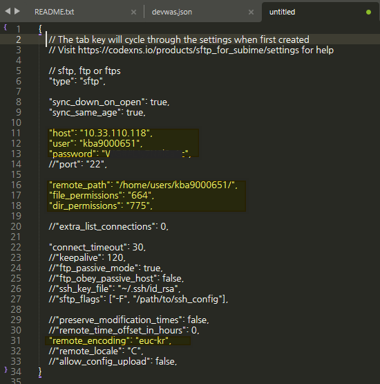 - 저장하면 파일명을 물어보는데 경로를 바꾸지 말고 “devwas.json” 과 같이 hostname을 사용해 주거나 원하는 이름을 주면 된다. 단,
.json형식으로 저장해야 한다. - 저장 위치는
C:\Users\사번\AppData\Roaming\Sublime Text\Packages\User\sftp_servers또는C:\Users\master\AppData\Roaming\Sublime Text\Packages\User\sftp_servers에 저장 된다. - 이 위치는 plugin 설치경로 내의
\User\sftp_servers위치이다. - 추후 삭제 또는 서버 정보 변경(비번변경 등) 시 직접 수정 하여 저장 할 수 있다.
[주의!] "remote_path" 지정 시 /home/www 와 같이 디렉토리 내 수 백개의 너무 많은 파일/디렉토리가 있는 경우 `SFTP: Browse Remote Server` 실행 시 화면 표시 문제로 탐색 창이 나오지 않는다. /home/www/AsianPlatformWAS 와 같이 항목이 보다 적게 나오는 디렉토리로 지정해야 한다. -
서버 접속 및 문서 열기
Command Palette
CTRL+SHIFT+P> sbr 정도 입력 >Browse Server...선택 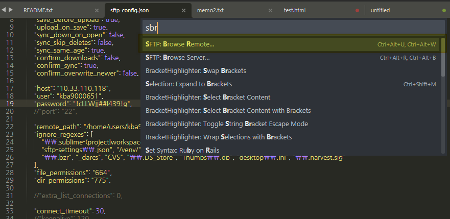 -
작업 할 서버 명을 선택
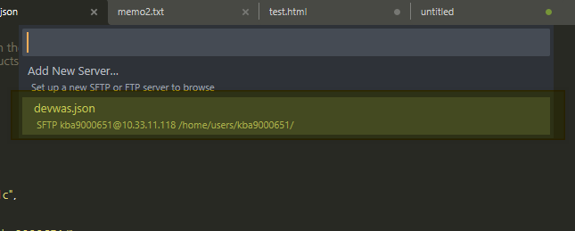 -
파일 및 디렉토리 탐색
Home 디렉토리에 위치하게 되며,
Up a folder...를 통해 직접 파일을 탐색 할 수 도 있고, 서버 IP가 나와 있는 제일 위 항목에 위치 후 Enter를 치면 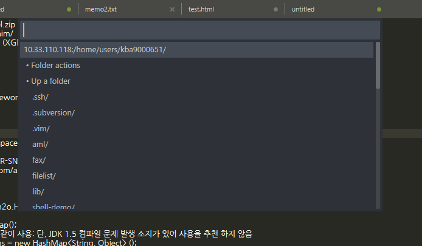다음과 같이 화면 아래에 표시되는 입력 창에서 Path를 직접 입력 할 수 있다. 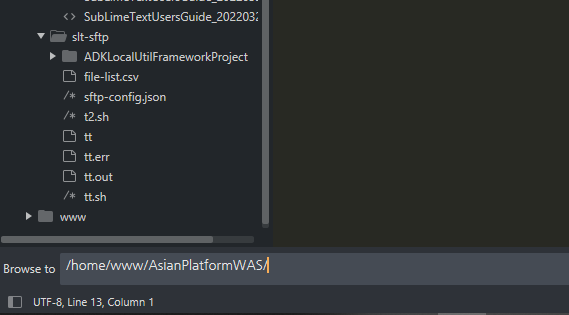
[주의!] 디렉토리 내 수 백개의 너무 많은 항목이 있는 경우 표시 문제로 탐색 창이 나오지 않는다. 이 경우 하단 Path 입력 창이 나오게 하여 보다 적은 항목이 나오는 디렉토리로 변경 한다. -
편집 할 파일이 나오면 파일을 선택 후
Enter>Edit를 선택 한다. 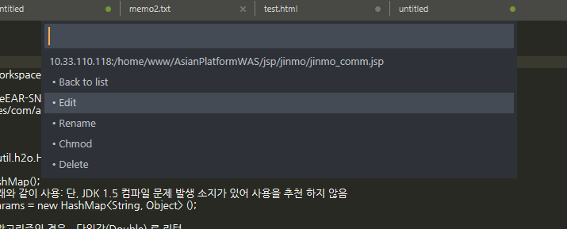
이제 수정하고 저장 하면 Remote 서버의 파일이 Local PC를 거치지 않고 바로 수정 된다. 이후 Editor를 종료 후 다시 열어도 Tab이 열려 있으면 바로 서버의 파일을 수정 할 수 있다.
단, 서버의 Password 가 변경된 경우 열린 Tab에서 Error 가 발생하고 수정이 불 가능 하므로 1번에서 등록 한 json 파일에 변경 비번을 적용해야 한다.
6.2 PC 폴더를 기준으로 작업 하기
- Side Bar 에서 SFTP 사용을 원하는 디렉토리를 찾아
우측클릭>SFTP/FTP>Map to Remote선택 sftp-config.json파일이 해당 폴더에 생기며 다음 항목을 주로 편집 하게 된다.
{
"save_before_upload": true, // 업로드 전 저장 필수 여부
"upload_on_save": true, //저장 시 자동 업로드 여부
"host": "10.33.110.118",
"user": "adk9000000",
"password": "password",
"port": "22",
"remote_path": "/home/users/kba9000651", //업로드 할 경로를 절대경로로 써 준다
"file_permissions": "664",
"dir_permissions": "775",
}
- [Optional] 개발서버 인 경우 공동작업의 권한문제 방지를 위해 “file_permissions”, “dir_permissions”를 예제와 같이 Setting 해 주는 것을 권장.
-
빈 폴더에 서버의 파일 또는 디렉토리를 받을 때:
sftp-config.json파일이 열린 탭에서 > Command Palette (CTRL+ALT+P) >SFTP: Browse Remote...(sbr 입력) > 원하는 Directory 또는 파일을 찾아Enter>Folder Action(폴더인 경우만) >Download -
[Optional] “upload_on_save”: false 일 시 Side Bar에서 우측 클릭 으로 수동 업로드를 할 수 있다. 자동인 경우 저장 즉시 Remote Path에 업로드 된다.
- 좌측 Side Bar 에서 우측 클릭 후
Download Folder,Upload Folder및Download File,Upload File을 이용하여 폴더와 서버의 항목들을 개별 적으로 일치시킬 수 있다. Sync Remote -> Local또는 반대의 기능을 사용 하여 디렉토리 전체를 서버와 Sync 시킬 수 있다.
7. Plugin 관리
7.1 플러그인 설치
플러그인 프로그램을 설치하기 위해서는 인터넷에 연결되어 있어야 하며 PackageControl 이 설치 되어 있어야 한다.
Command Palette (
CTRL+ALT+P) > Install Package Control
플러그인 설치 방법
Command Palette >
Package Control: Install Package(pcip입력) 원하는 패키지명을 입력하여 선택 > 최측 하단에 설치 Progress 및 상태가 표시됨
인터넷 연결이 불가능 한 환경에서는 인터넷이 가능 한 PC에 Sublime Text를 설치하여 수동으로 복사 하여 옮겨준다.
- Sublime Text를 종료
C:\Users\사용자명\AppData\Roaming\Sublime Text의Installed Packages와Packages폴더안에 추가된 플러그인 파일을 관리망 또는 업무망으로 복사- Command Palette >
Preferences: Package Control Settings(ppc) 실행- “installed_packages” 항목에 추가된 패키지 명을 추가 - 패키지 명은 인터넷 연결 PC의 것을 확인
7.2 설치된 플러그인 목록 보기
어떤 플러그인이 설치 되어 있는지 목록을 보여 준다.
Command Palette (
CTRL+ALT+P) >Package Control: List Packages(pcli입력)
7.3 플러그인 관리 - 삭제 및 Update
삭제: Command Palette >
Package Control: Remove Package(pcrp입력)
Update(인터넷 필요): Command Palette >Package Control: Upgrade Package(pcup입력)
7.4 사전 제공 플러그인 목록
| Plugin 명 | 설명 |
|---|---|
| Package Control | Plugin 설치, 관리 |
| CovertToUTF8 | EUC-KR Locale 지원 |
| BracketHighlighter | Bracket 표시 기능 확장 |
| SFTP | SFTP 업로드 및 Sync 기능 |
| Compare Side-By-Side | 2개파일 비교(diff) 기능 |
| HexViewer | Binary Data에 대한 편집, 조회 |
| Nodejs | Nodejs 개발용 |
| MarkdownPreview | Markdown 문서 작성 및 조회 |